VI Clinic de Voley-Playa - 2017

El ADV Miguelturra vuelve a organizar, por sexto año consecutivo, el Clinic de Voley-Playa. Orientado a chavales nacidos entre 2003 y 2009, el clínic les ofrece más de una semana de actividades deportivas y de recreo, donde los nuevos en este deporte aprenderán las nociones básicas del voley playa mientras los más experimentados podrán perfeccionar su técnica, todo ello a la vez que se divierten con los juegos y actividades organizados por nuestros monitores.
El clinic tendrá lugar del 6 al 15 de Julio, con descanso el domingo 9. La inauguración se celebrará el día 6, a las 20:00 horas en el Parque Rivas Moreno. El sábado 15 tendrá lugar la fiesta de despedida en el parque acuático Playa Park de Ciudad Real, y posteriormente el acto de clausura a las 20:00 horas en el Parque Rivas Moreno.
Inscripción
Para formalizar la inscripción, debe rellenar la ficha de inscripción que puede descargar aquí, y realizar el ingreso de la cuota en la cuenta 3190 2021 47 2013929027 (aconsejamos realizar el pago de 8:30 a 10:30). Una vez hecho, debe presentar el resguardo del ingreso y la ficha de inscripción en las oficinas de la Concejalía de Deportes, sitas junto al pabellón municipal de deportes.
{kind=link}
Los alumnos de las escuelas deportivas podrán inscribirse los días 12 y 13 de Junio. A partir del día 14 y hasta el 23, será el plazo para inscripción libre.
Los plazos de inscripción serán anunciados en nuestras cuentas oficiales de Twitter @advmiguelturra y Facebook.
Cuotas
El precio de la inscripción son 60€ por el primer hijo (50€ para los hijos de socios del ADV Miguelturra), y 40€ por el segundo hijo y posteriores.
Horario de Actividades
El horario habitual será de 9:00 a 14:00 pudiendo efectuarse la recogida de los alumnos/as entre las 14:00 y las 14:30.
Tanto la ceremonia inaugural el día 6 como la fiesta de clausura el día 15 tendrán lugar a las 20:00 en el Parque Rivas Moreno
Equipo Técnico
Dirección
Jugador formado en la cantera del ADV Miguelturra y actual miembro del equipo senior B. Entrenador de nivel II con formación diversa es el actual técnico de los equipos cadete femenino B y juvenil femenino B. A pesar de su juventud, cuenta con gran experiencia en coordinación de actividades deportivas.
Entrenador de nivel II con experiencia en competiciones nacionales, actualmente es el coordinador de la Escuela de Voleibol de Miguelturra y miembro activo de la directiva del club siendo a la vez entrenador de los equipos juvenil masculino e infantil masculino (actuales subcampeones de CLM) del ADV Miguelturra, también ha formado parte del equipo técnico de las selecciones de Castilla-La Mancha. Como jugador ha sido formado en las Escuelas de Miguelturra habiendo sido posteriormente miembro del equipo absoluto en numerosas temporadas.
Alumna de nuestra escuela desde temprana edad, es actualmente jugadora del equipo senior, habiendo sido campeona de Castilla-La Mancha en Voley Playa en tres ocasiones participando en los correspondientes campeonatos nacionales. Como entrenadora se ha formado en las escuelas de Miguelturra siendo entrenadora de nivel I y actual entrenadora del equipo infantil femenino A. En Voley Playa viajó el pasado año al Campeonato de España sub-15 con el equipo femenino del ADV Miguelturra y con el cual este año han vuelto a lograr la clasificación.
Responsables de Grupo
Formada en las categorías inferiores de nuestro club y actual capitana del equipo Juvenil Femenino A. Es entrenadora de voleibol de nivel I estando actualmente en formación en nuestra escuela como entrenadora asistente en el equipo Alevín Masculino A con el que este año participa en el Campeonato de España.
Formado como jugador en la cantera del ADV Miguelturra, es jugador habitual de nuestros equipos senior y participó en el Campeonato de España de Voley Playa sub-21 en 2016 como campeón de Castilla-La Mancha. Como entrenador ha recibido formación en nuestras escuelas siendo entrenador de nivel I y formando parte actualmente del equipo técnico de Prado Marianistas de Ciudad Real como entrenador del equipo cadete femenino.
Formado en la cantera del CV Campus Universitario de Ciudad Real, llegó a nuestro club en su etapa juvenil tras haber formado parte en varias ocasiones de la Selección de Castilla-La Mancha y participado en numerosos campeonatos nacionales, actualmente forma parte del equipo senior de nuestro club. Es entrenador de nivel I y se encuentra en formación en nuestra escuela como entrenador asistente del equipo Infantil Femenino A. El pasado año formó parte del equipo técnico que se desplazó con el equipo infantil femenino al Campeonato de España de Voley Playa de Lorca.
Entrenador de nivel I formado como jugador y entrenador en nuestras escuelas siendo actualmente entrenador del equipo cadete masculino y miembro del equipo senior. Monitor del Clinic de Voley Playa desde su primera edición en 2012, también participó en el Campeonato de España de Voley Playa sub-21 en 2015 como subcampeón de Castilla-La Mancha.
Jugador proveniente de las categorías inferiores del CV Campus Universitario de Ciudad Real y miembro de la Selección de Castilla-La Mancha, llega al ADV Miguelturra en su etapa juvenil siendo miembro imprescindible del equipo absoluto en todas las temporadas posteriores. Entrenador de nivel I con más de 10 años de experiencia en nuestras Escuelas Deportivas, actualmente dirige el equipo cadete cemenino A. Es miembro activo de la directiva del club y monitor del Clinic desde la primera edición en 2012.
Jugador procedente de las categorías inferiores del ADV Miguelturra, milita actualmente en el equipo senior masculino con el que consiguiese el ascenso a Primera División en la temporada 2014/15. Formado como entrenador en las escuelas municipales ostenta el nivel II nacional, consiguió ser campeón de Castilla-La Mancha alevín femenino en 2016, participando en el Campeonato de España. Actualmente es ténico de los equipos alevín femenino D y E y ha llegado a un acuerdo con el club para dirigir el equipo juvenil femenino A el año próximo. También es miembro activo de la directiva del club.
Técnico Superior en Actividades Físicas y Animación Deportiva se incorporó como jugador del ADV a edad avanzada siendo actual capitán del equipo senior masculino B. Como entrenador ha sido formado también en nuestras escuelas, posee el nivel I y dirige en la actualidad el equipo infantil femenino C, también ha formado parte del equipo técnico en los campeonatos nacionales cadete masculino en 2015 y alevín femenino en 2017.
Entrenadores Asistentes
- Andrea Muñoz (infantil masculino)
- David Peco (infantil femenino)
- Marta Gómez (alevín masculino A)
- Saúl Villa (alevín masculino B)
- Borja Rodado (alevín femenino A)
- Elena Pradillo (alevín femenino B)
- Marina Ruiz (alevín femenino C)
- Chechu Segura (benjamín masculino)
- Almudena Vellón (benjamín femenino e iniciación)
Apoyo, Actividades y Avituallamiento
- Manolo de la Torre
- Joaquín González
- Lorena Sánchez
- Pilar Briñas
- Christopher Morcillo
- Clara Rojas
Actividades
Presentación
| 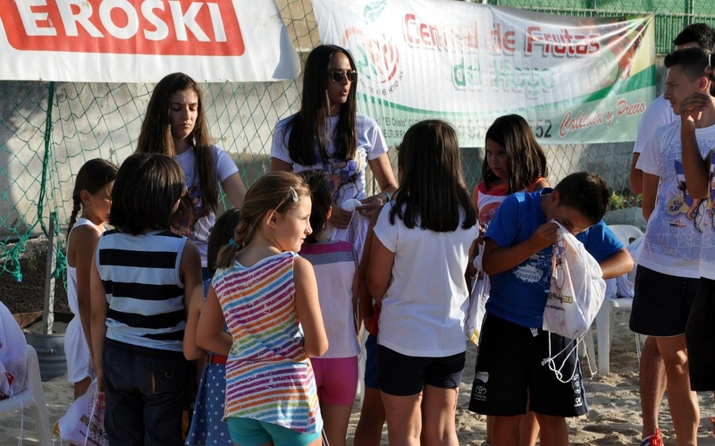 | 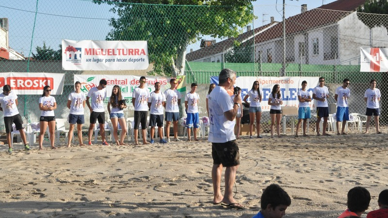 | 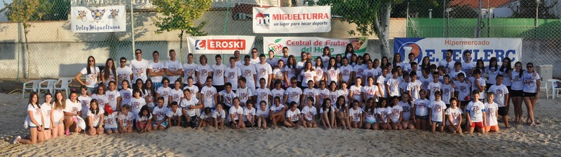 |
{kind=link}
{kind=link}
{kind=link}
El primer día del Clínic por la tarde se realiza la presentación del mismo, donde los chicos y chicas se reparten en grupos junto a los monitores asignados, se les explica el funcionamiento del Clínic y se les entrega el material.
Entrenos
| 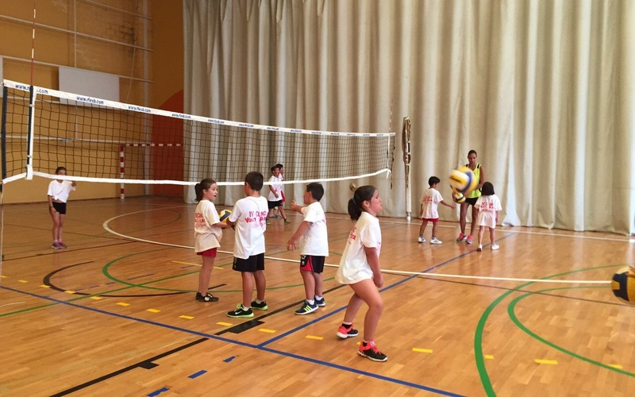 | 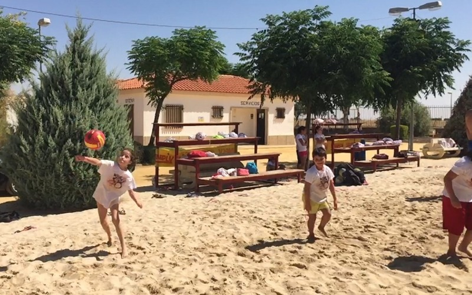 |

|
{kind=link}
{kind=link}
Los entrenamientos son la base del Clínic, se realizan tanto en pista de voley playa como de voleibol y están adaptados para el nivel y categoría de todos los participantes, los nuevos en este deporte trabajarán desde la base mientras que los más experimentados podrán perfeccionar su técnica.
Almuerzo
| 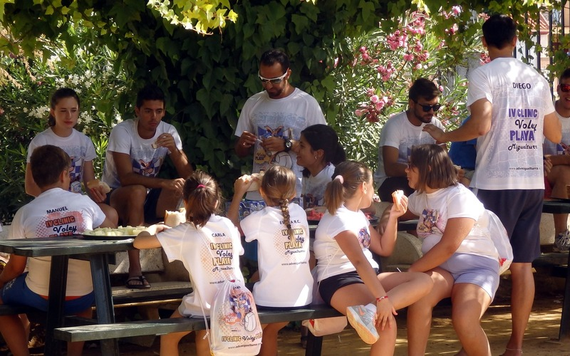 | 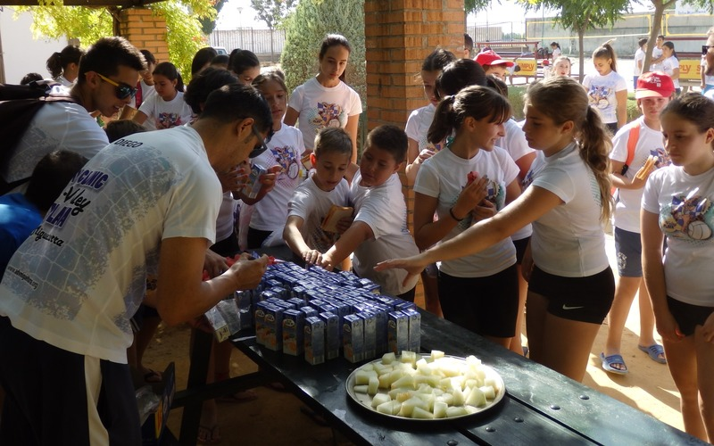 | 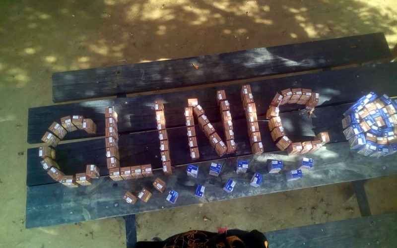 |
{kind=link}
{kind=link}
{kind=link}
A media mañana monitores y alumnos reponen fuerzas con un almuerzo saludable para poder continuar disfrutando.
Gymkhanas y Juegos
| 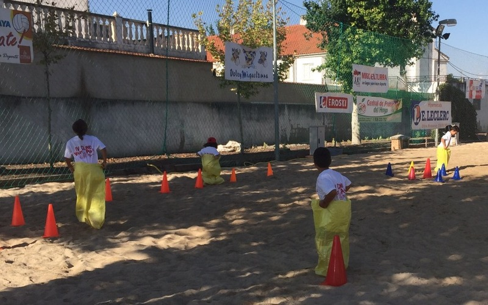 | 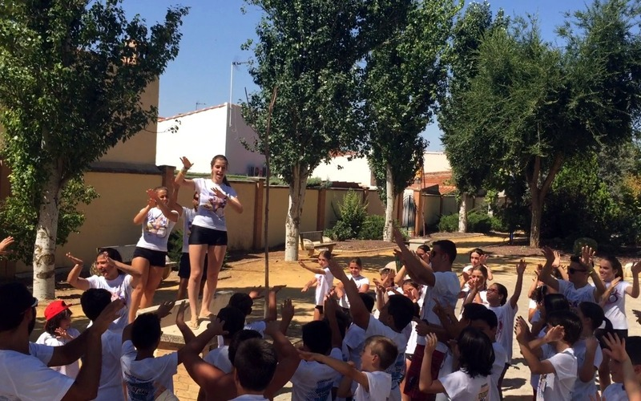 | 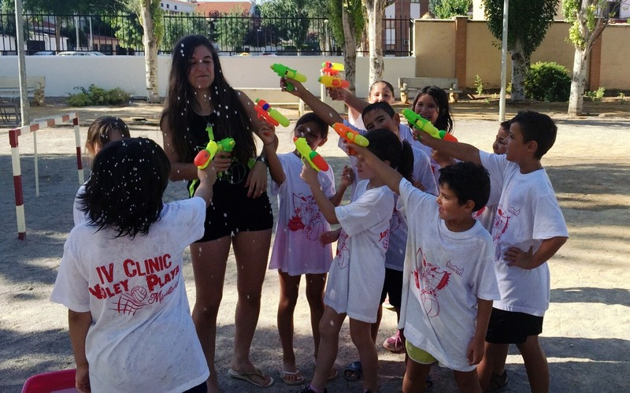 |
{kind=link}
{kind=link}
{kind=link}
Divertirse también es imprescindible en el Clínic, por ello los monitores y monitoras organizan juegos y competiciones para el disfrute de los participantes.
Piscina
| 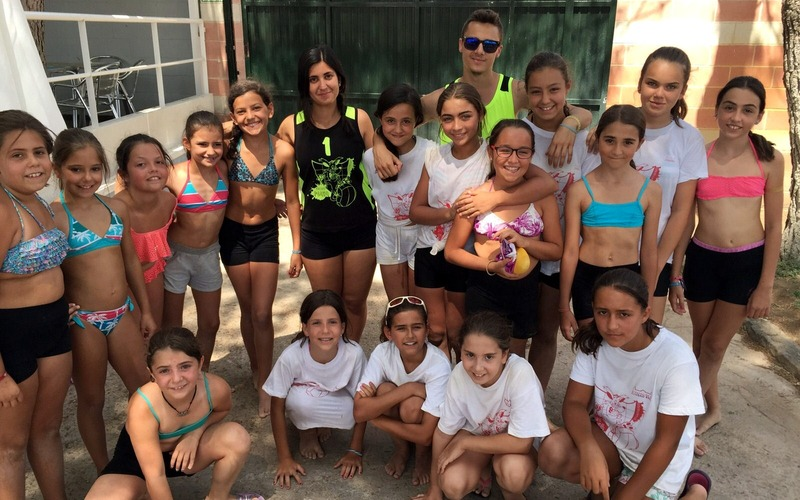 | 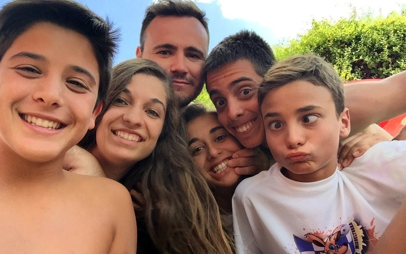 | 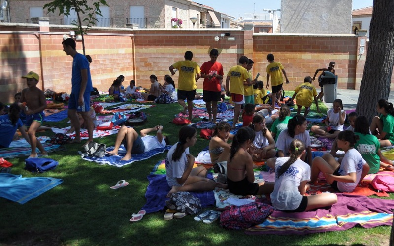 |
{kind=link}
{kind=link}
{kind=link}
Tras el duro trabajo de entrenamiento, todos los días terminamos con un merecido descanso en la Piscina Municipal, donde nos refrescamos y comentamos lo mejor de la mañana.
Playa Park
| 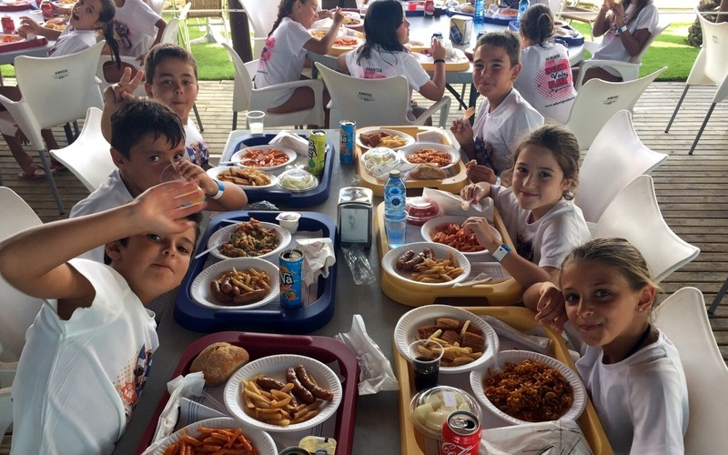 | 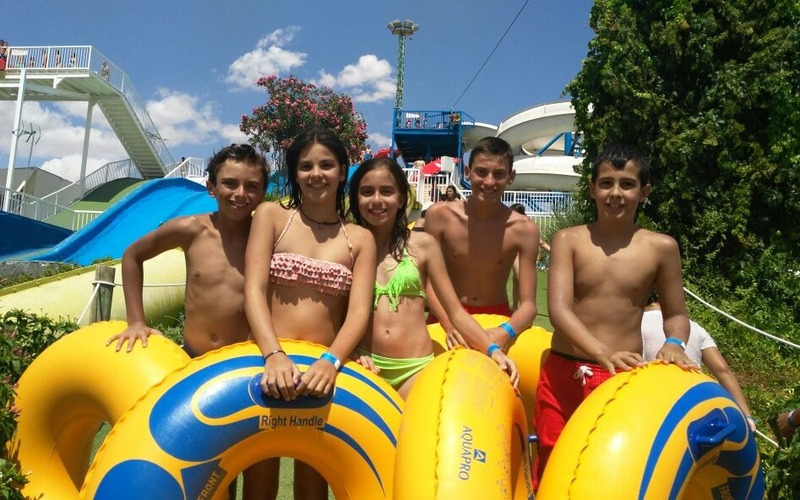 | 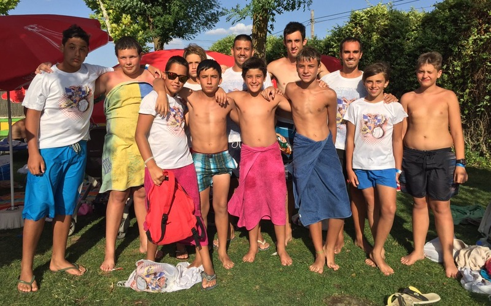 |
{kind=link}
{kind=link}
{kind=link}
Para cerrar debidamente el Clínic, cada año nos vamos de excursión con todo incluido al parque acuático PlayaPark en Ciudad Real.
Acto de Clausura
| 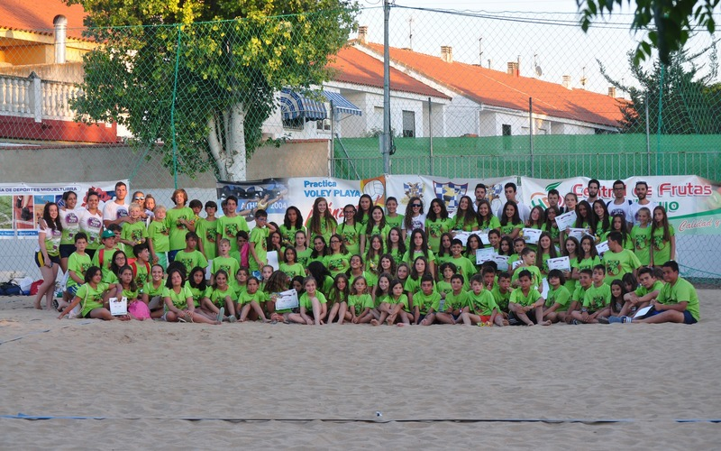 | 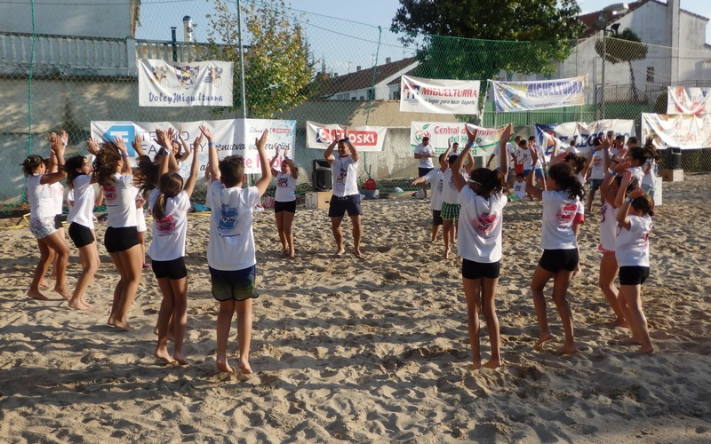 | 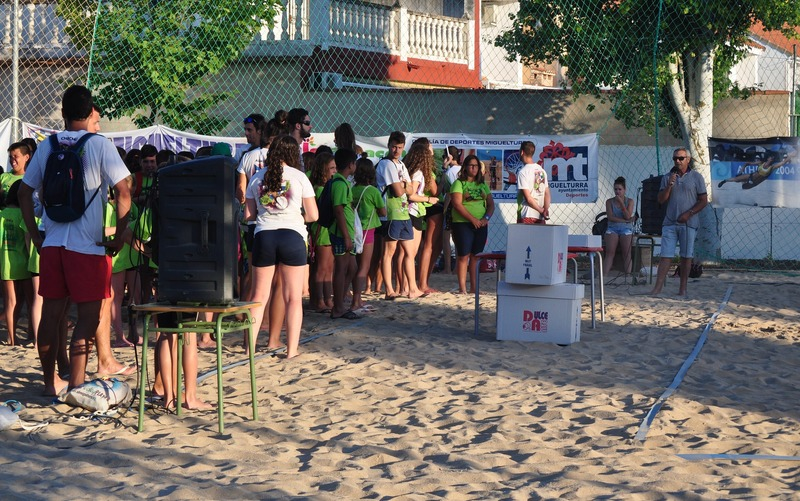 |
{kind=link}
{kind=link}
{kind=link}
El último día por la tarde se realiza la tradicional ceremonia de clausura a la que pueden asistir las familias y en la que se lleva a cabo la entrega de diplomas.
Visitas de Jugadores
2014
Dianela Paz - ex jugadora del ADV Miguelturra

2013
Sara González - 117 veces internacional con la Selección Española.

2012
Carlos Baos (jugador de Unicaja Almería en superliga y capitán de la selección española sub-21)
Javier Sumozas (jugador de Voley Guada en superliga, ex-jugador del ADV Miguelturra)